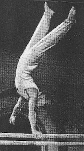

Dmitry Leonkin (USSR)
1952 Olympic R Bronze Medalist

Medal Total
Olympic Games: 1 Gold, 1 Bronze
Leonkin was born on December 16, 1928 and trained at the Army Club in Lvov (Ukranian SSR). He finished a disastrous 78th AA at the 1952 Olympic Games due to a score of 3.75 on compulsory pommel horse.
Competition Results
1950
USSR Championships: 2nd Team, 8th AA
1951
USSR Championships: 2nd Team, 4th AA, 1st FX, 1st R
1952
Olympic Games: 1st Team, 78th AA, 3rd R
1958
Army Club Spartakiade: 1st Team, 14th AA
USSR Championships: 2nd FX
This page was created on May 21,
2006 and was last updated on September 28, 2013.
© Gymn Forum